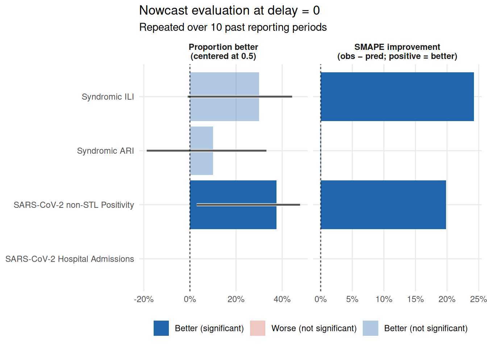
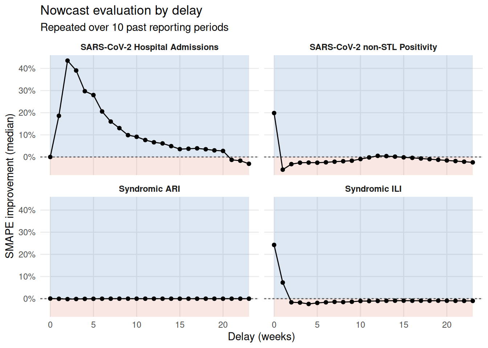
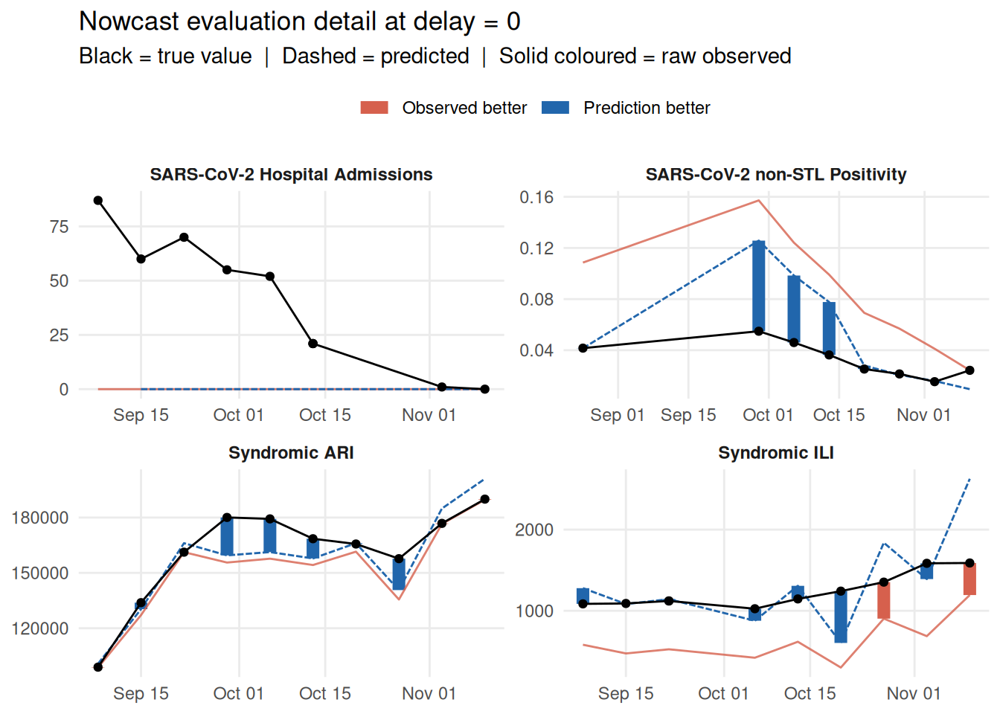
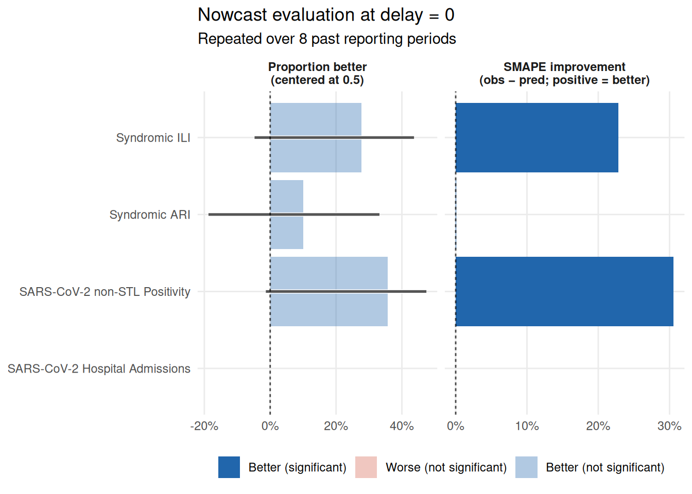

library(nowcastr)
#> Warning: replacing previous import 'DT::dataTableOutput' by
#> 'shiny::dataTableOutput' when loading 'nowcastr'
#> Warning: replacing previous import 'DT::renderDataTable' by
#> 'shiny::renderDataTable' when loading 'nowcastr'
nc_eval_obj <-
nowcast_demo %>%
nowcast_eval(
n_past = 10,
col_date_occurrence = date_occurrence,
col_date_reporting = date_report,
col_value = value,
group_cols = "group",
time_units = "weeks",
do_model_fitting = TRUE
)
#> Evaluating nowcast ■■■■■■■■■■■■■■■■ 5/10 | ETA: 1s
#> Evaluating nowcast ■■■■■■■■■■■■■■■■■■■■■■■■■■■■ 9/10 | ETA: 0s
#> Evaluating nowcast ■■■■■■■■■■■■■■■■■■■■■■■■■■■■■■■ 10/10 | ETA: 0sRun evaluation
You can run the evaluation with all the same parameters as nowcast_cl().nowcast_eval() has only one additional parameter: n_past, which controls how many steps in the past you wish to run a nowcast on.
This will return an S7 object with 2 slots:
nc_eval_obj@detail %>% dplyr::glimpse(0)
#> Rows: 958
#> Columns: 11
#> $ group <chr> …
#> $ cut_date <date> …
#> $ date_occurrence <date> …
#> $ last_r_date <date> …
#> $ value <dbl> …
#> $ value_predicted <dbl> …
#> $ value_true <dbl> …
#> $ delay <dbl> …
#> $ SAPE_pred <dbl> …
#> $ SAPE_obs <dbl> …
#> $ pred_is_better <int> …
nc_eval_obj@summary %>% dplyr::glimpse(0)
#> Rows: 96
#> Columns: 15
#> $ group <chr> …
#> $ delay <dbl> …
#> $ n_periods <int> …
#> $ n_obs <int> …
#> $ SMAPE_pred <dbl> …
#> $ SMAPE_obs <dbl> …
#> $ SMAPE_improvement <dbl> …
#> $ SMAPE_improvement_mean <dbl> …
#> $ SMAPE_improvement_med <dbl> …
#> $ SMAPE_improvement_q1 <dbl> …
#> $ SMAPE_improvement_q3 <dbl> …
#> $ proportion_pred_is_better <dbl> …
#> $ n_pairs <int> …
#> $ CI_lower <dbl> …
#> $ CI_upper <dbl> …Plots
Plot aggregated indicators
- “SMAPE Improvement median” = median of the difference between SMAPE(observed) and SMAPE(predicted)
- “Proportion Better = proportion of predictions that outperform base values (-50% to center around zero)
plot_nowcast_eval(nc_eval_obj, delay = 0)
Plot one indicator by delay / for one indicator
plot_nowcast_eval_by_delay(
nc_eval_obj,
indicator = "SMAPE_improvement_med"
)
Plot raw values / for one delay
- predicted values
- base reported values, at the time
- last reported values
plot_nowcast_eval_detail(nc_eval_obj, delay = 0)
#> Warning: Removed 1 row containing missing values or values outside the scale range
#> (`geom_line()`).
Evaluate Scenarios
We test if accuracy of nowcasts improve with fill_future_reported_values():
library(nowcastr)
nc_eval_obj_with_fill <-
nowcast_demo %>%
fill_future_reported_values(
col_date_occurrence = date_occurrence,
col_date_reporting = date_report,
col_value = value,
group_cols = "group",
max_delay = "auto"
) %>%
nowcast_eval(
n_past = 10,
col_date_occurrence = date_occurrence,
col_date_reporting = date_report,
col_value = value,
group_cols = "group",
time_units = "weeks",
do_model_fitting = TRUE
)
#> Evaluating nowcast ■■■■■■■■■■■■■■■■ 5/10 | ETA: 1s
#> Evaluating nowcast ■■■■■■■■■■■■■■■■■■■■■■■■■■■■■■■ 10/10 | ETA: 0s
plot_nowcast_eval(nc_eval_obj_with_fill, delay = 0)